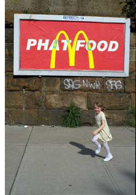

Money is Legitimacy? #
Okay, this strikes me. On graffiti which defaces advertising:

Advertising is designed to manipulate people, whereas graffiti is essentially a pure mode of self-expression. Advertising is encouraged or courted by the authorities. Graffiti is illegal. And here is the difference that makes sense of all the others: money. All the legitimacy of advertising derives from the money that is paid to post it and the revenue it generates.
Don’t we fight claims which are ultimately rooted in the same gag reflex?? That we’re a public domain pedestrian’s language??
And, in the context of last week’s poll on Ruby-Talk, wherein we discovered how many are out there using Ruby full-time, I wonder: are you worried about what cash could to do Ruby?
phil
I really could use some cash at this point – I just hope Ruby is willing to share some of her newfound riches.
As for your question, well, yeah. I’m a little worried. I mean Ruby’s been driving around town the last few days in that brand new red Mercedes convertable and shoppin at Gucci and Sak’s Fifth Avenue buyin all kinds of expensive outfits. I really hope all of this isn’t go’in to her head, ya know? But for now I say “You go girl!”. I mean she deserves it. She worked hard in obscurity all them years while all them other languages either ignored her or made fun of her. But she got where she is by work’n hard (well, good looks didn’t hurt – there’s some beautiful code there, I’ll tell ya).
Like I said though, I just hope she remembers her friends from the old hood. Those of us who have been root’n for her for a lot of years now.
grAR!
Well on the Perl side of the street, $ has made the accessible culture a bit dilute, but at the same time it made using Perl more defensible to the old-money idiots.
Ruby gaining wider acceptance will surely dilute some of the accessible culture, but we have people like _why to protect us from mediocrity. So I feel comfortable about our culture. And surely an OO alternative to Java that is acceptable both to modern high level programmers, and also to the old-money types, this can only be good. Even if it did ruin the culture, I think the industry would be better off for me, subjectively, if Ruby was common and dilute. If it gets too bad, well we already moved to something new. So no fear.
francis
Dunno if I’d worry about the analogies to graffiti. Part of the thing that causes a conflict in graffiti vs. advertising is that public visual space—on billboards, bus shelters, subway cars—is finite, and advertising grows like kudzu to swallow everything in its path, so graffiti has to compete for space.
Mindspace in the Ruby world isn’t necessarily finite. But of course, as Ruby grows, its community might change. In fact, let me say that as Ruby grows—and it’s growing right now, currently thanks to Rails—its community definitely will change. That will be interesting to watch, and possibly negative in some ways. There are lots of community maneuvers that can be undertaken to amplify the positive effects and dampen the negative effects.
Yes, on some level I am worried. On the other hand, I try not to be wistful about these things. I’ve fallen in love with communities before and then had them change before my eyes. (This is pretty common, in fact, with communities of interest such as our Ruby fanbase.) I moved on and did okay. You never step in the same river twice, and yet the water can still feel pretty nice flowing around your toes.
emmanuel
wrt graffiti, the difference it makes is that people who graffiti my garage door don’t ask me my permission, while advertisers will only do it with my consent.
that’s got nothing to do with money, but with respect to other people’s property or to public space.
i don’t like graffitis.
2097
Advertisers do stuff to me without my consent all the time; they call me, they spam my inbox, my blog and my wiki, I get subjected to radio spots on my neighbours radio, they advertise in front of the movie in cinemas (not in the community cinema that I favor, though), they put up signs in streets that I have to walk, they put up signs in grocery stores, and the packaging of products that I buy are also covered in a kind of advertising for the product.
Advertisers show no respect at all for public space.
On the other hand, awareness of this issue is becoming more widespread than ever.
The graffiti on my garage door was at least interesting.
Comments are closed for this entry.